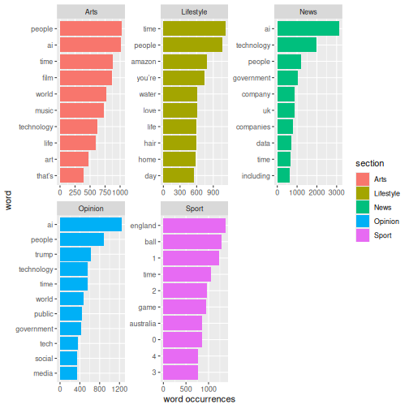

Word frequency analysis
Last updated on 2026-06-29 | Edit this page
Overview
Questions
- How is a frequency analysis conducted?
Objectives
- Learn how to find frequent words
- Learn how to analyse and visualise it
Frequency analysis
A word frequency is a relatively simple analysis. It measures how often words occur in a text.
R
articles_anti_join |>
count(word, sort = TRUE)
OUTPUT
# A tibble: 68,899 × 2
word n
<chr> <int>
1 it’s 6584
2 ai 5778
3 people 4422
4 time 4277
5 technology 3946
6 world 2758
7 don’t 2131
8 day 1803
9 life 1694
10 uk 1690
# ℹ 68,889 more rowsThe previous code chunk resulted in a list containing the most frequent words. The words are from articles about both presidents, and they are sorted based on frequency with the highest number on top.
A closer look at the list may reveal that some words are irrelevant. Given that the articles in the dataset are about the two presidents’ respective inaugurations, we consider the words below irrelevant for our analysis. Therefore, we make a new dataset without these words.
R
articles_filtered <- articles_anti_join |>
filter(!word %in% c("it’s", "don’t"))
articles_filtered |>
count(word, sort = TRUE)
OUTPUT
# A tibble: 68,897 × 2
word n
<chr> <int>
1 ai 5778
2 people 4422
3 time 4277
4 technology 3946
5 world 2758
6 day 1803
7 life 1694
8 uk 1690
9 that’s 1667
10 government 1644
# ℹ 68,887 more rowsThe words deemed irrelevant are no longer on the list above.
Instead of a general list it may be more interesting to focus on the most frequent words belonging to articles about the two presidents respectively.
R
articles_filtered |>
count(section, word, sort = TRUE)
OUTPUT
# A tibble: 138,065 × 3
section word n
<chr> <chr> <int>
1 News ai 3131
2 News technology 1993
3 Sport england 1371
4 Sport ball 1287
5 Opinion ai 1250
6 Sport 1 1239
7 News people 1196
8 Lifestyle time 1117
9 Lifestyle people 1062
10 Sport time 1050
# ℹ 138,055 more rowsKeeping an overview of the words associated with each section can be a bit tricky. For instance, the word “time” is associated with both lifestyle and sport. This is easy to see, as the two words are right next to each other, but what if the words are further apart.
Another way of looking at the words compared with eachother in section could be a table where we count the words used pr sections easily comparable. In this analysis the section is the guiding principle.
R
articles_filtered |>
count(section, word, sort = TRUE) |>
pivot_wider(
names_from = section,
values_from = n
)
OUTPUT
# A tibble: 68,897 × 6
word News Sport Opinion Lifestyle Arts
<chr> <int> <int> <int> <int> <int>
1 ai 3131 36 1250 351 1010
2 technology 1993 294 565 466 628
3 england 106 1371 41 27 47
4 ball 5 1287 11 40 20
5 1 89 1239 40 106 73
6 people 1196 250 883 1062 1031
7 time 676 1050 551 1117 883
8 government 1024 19 429 65 107
9 2 68 968 25 161 119
10 game 25 953 31 144 386
# ℹ 68,887 more rowsWe can also visualize word frequency. In the following we will visualize what the top 10 word used in each section is
R
articles_filtered |>
group_by(section) |>
count(word, sort = TRUE) |>
top_n(10) |>
ungroup() |>
mutate(word = reorder_within(word, n, section)) |>
ggplot(aes(n, word, fill = section)) +
geom_col() +
facet_wrap(~section, scales = "free") +
scale_y_reordered() +
labs(x = "word occurrences")
OUTPUT
Selecting by n
Interesting that numbers occurs in the Sports section. Lets have a
look at where it occurs. In order to do so we have to go back to our
original object articles where we have the full text of
articles. ````
ERROR
Error in parse(text = input): attempt to use zero-length variable nameR
articles |>
filter(section == "Sport") |>
filter(str_detect(text, "\\b1\\b")) |>
select(text) |>
head()
OUTPUT
# A tibble: 6 × 1
text
<chr>
1 Sonia Bompastor, the Chelsea head coach, called for goalline technology to be…
2 When the Wimbledon organisers announced last year that electronic line-callin…
3 Barcelona foiled by Bayern’s block Alexia Putellas said Barcelona have to “ad…
4 The Australia fast bowler Mitchell Starc has urged the International Cricket …
5 Semi-automated offside technology (SAOT) failed during the Carabao Cup semi-f…
6 Renée Slegers said teams in the Women’s Super League “need just decisions” an…- Making a frequency analysis
- Visualising the results